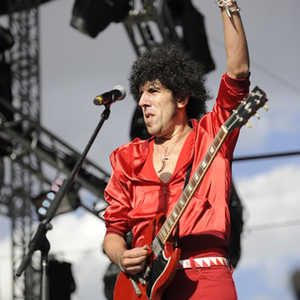
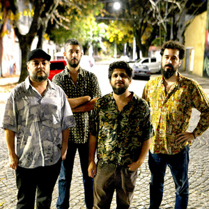

Artistas que confían en nosotros
Carca
Carca es un músico argentino de rock oriundo de Ciudad Evita, provincia de Buenos Aires, nacido en el año 1971.
Su nombre real es Carlos Hernán Carcacha.
Comenzó su carrera musical integrando la banda Tía Newton, donde se encargaba de las letras, las guitarras y la programación.
La banda editó tan sólo dos temas en el compilado Ruido, un cassette en la revista del mismo nombre, el cual contó con la participación de Babasónicos.
Luego de la disolución del grupo, Carca comienza su carrera como solista allá por 1993. (Click para saber más)
Ya en 1994, edita su primer disco titulado Miss Universo. El disco contó con la participación de Daniel Melero, Flavio de los Los Fabulosos Cadillacs, y Babasónicos.
En 1996, sale el disco A un Millón de Años Blues, la temática del disco es totalmente diferente. Carca elabora un disco con temas con aire lúgubre, guitarras distorsionadas y una buena base de batería. Un nuevo viaje, con un ritmo más rápido, por paisajes sombríos.
En 1998, aparece Carca, canciones que continúan con un aire sombrío.
Para el 1999, Carca sacó el disco que más repercusión tendría: Nena. Carca deja ver su lado más depravado, con canciones que hablan de mujeres sexies, autos y rock. El disco venía acompañado con otro que se llamaba Descuido, que incluía versiones ineditables, algunas de ellas grabadas en vivo en la radio Rock & Pop. El disco tenía la particularidad de ser un disco de temas en vivo de sus peores tomas, donde más cometían errores.
En el 2003, lanzó Divino, canciones mucho más tranquilas, con un sonido hi-fi, dejando de lado las guitarras distorsionadas (o casi...). El álbum cuenta con la participación de Juanse de los Ratones Paranoicos en el tema Quién lo Invitó y Andrés Calamaro en Cursis. Este tema, fue compuesto por Carca tratando de imitar el estilo de Calamaro, a modo de tributo. Las canciones Sexcondiendo y Fuera de la Ley se destacan por sus rimas.
A partir del fallecimiento de Gabo Manelli en 2008, Carca se comenzó a participar de manera casi constante en Babasónicos en calidad de bajista.
En junio de 2009 lanzó Uoiea, su séptimo disco de estudio.
A fines de 2013 Carca publicó su primer compilado: Carca Registrada, retrospectiva de su carrera solista desde 1994 que incluyó 4 canciones nuevas y la presencia de artistas amigos, como sus compañeros de Babasónicos o Andrés Calamaro, entre otros. Este trabajo estuvo disponible desde el 3 de diciembre de 2013 en formato digital y unos días más tarde estuvo disponible físicamente en CD y vinilo.
En Julio del 2019 Poseidótica lanza un EP en vivo junto a Carca, registro del show “Rebelión Zombie”, ocurrido en Niceto Club en Diciembre del 2017.
En marzo de 2020 edita la canción "Silente, La Serpiente", para luego editar el single "Una canción de amor". Siguiendo en el 2020, en julio edita "Mamá cultiva Marihuana".
Marilina Bertoldi

Marilina nació en Sunchales, provincia de Santa Fe, pero se instaló en Buenos Aires y estuvo al frente de la banda Connor Questa entre 2010 y 2015, cuando se dedicó de lleno a su carrera solista, que ya había iniciado paralelamente con el lanzamiento de un disco en 2011, "El peso del aire suspirado". Su hermana mayor, Lula, que formó Eruca Sativa, participó en este debut.
Las influencias de Bertoldi son variadas y entre ellas están las obras de Jeff Buckley, Nina Simone, Aretha Franklin, Björk, Thom Yorke y Gustavo Cerati, entre otros.
(Click para saber más)
Pero para dar a conocer su trabajo, Marilina comenzó a subir videos a YouTube, que luego tuvieron mucha aceptación.
Esta artista de raíces santafesinas armó, para la presentación de "La presencia de las personas que se van", su segundo disco, una banda soporte junto a Edu Giardina en batería, Luciano Farelli (que también fue el productor) y Guillermo Porro en guitarras y Daiana Azar en bajo y teclados. Durante el 2015 recorrió con su música gran parte del país, dejando en cada escenario una impronta de originalidad y potencia.
El tercer álbum de Marilina se llamó "Sexo con modelos" y llegó en 2016. Fue el primero después de la separación de Connor Questa. En la placa se notó el cambio radical del sonido y la estética de su proyecto como solista. El mismo se publicó en YouTube para escuchar de manera libre. Todas las canciones fueron compuestas y escritas por Marilina y la edición corrió por cuenta de Pelo Music. Fue producido, grabado y mezclado por Guillermo Porro, y masterizado en Puro Mastering. Las baterías se grabaron en Romaphonic y en el garage de la familia Azar.
En 2018 llegó "Racat", el primer corte de difusión del cuarto disco de la santafesina que se llamó "Prender un fuego" y, también a través del sello Pelo Music, se editó en septiembre de ese año. Este nuevo trabajo estuvo producido por la mismísima artista junto a Brian Taylor (encargado también de la mezcla) y fue grabado en La Sonoteca y Estudio Átomo. El asesoramiento de mezcla estuvo a cargo de Lucas Gómez y Germán Taylor y estuvo masterizado por Matt Colton en Alchemy Mastering de Inglaterra. Ese disco la llevó a ganar el premio Gardel de Oro, entregado por la Cámara Argentina de Productores Fonográficos, y se convirtió así en la primera mujer en ser reconocida con este galardón mainstream desde que lo ganara Mercedes Sosa en el año 2000.
Con toda la expectativa por saber cómo seguiría su carrera luego de ese hito, el primer single del nuevo trabajo fue "Cosa mía", tres años después. "Mojigata" finalmente fue editado por Pelo en marzo del '22, con mucha presencia de guitarras.
Los Espiritus
Los Espíritus es el proyecto alternativo de Maxi Prietto junto a otros secuaces del blues, el rock y las salas de ensayo, en el que vuelca su gran amor por el blues, pero en contextos más místicos y sobre bases de ritmos latinos.
Algo pasaba cada vez que se juntaban, ahí en La Paternal, el barrio de Pappo. Grabaron sus canciones y las colgaron de inmediato. Así llegó un primer EP: "Hacele caso a tu espíritu", luego el hit "Lo echaron del bar" (2011), y después: "El gato" (2012).
(Click para saber más)
Los Espíritus fue banda ganadora de la categoría "Revelación 2013” en la encuesta del suplemento No de Página 12, y “Lo echaron del bar” fue un éxito en las radios mexicanas. En aquellos años participaron de festivales como el Festipulenta y Music Is My Girlfriend. Su primer larga duración, "Los Espíritus", fue editado de manera independiente. La placa reúne canciones de los dos anteriores EP más cinco temas nuevos. Fue grabado en Domoestudio Plasma por Pablo Calzone y luego mezclado por Maxi Prietto. El arte de tapa y diseño estuvieron a cargo de La Vieja Flores.
Durante 2014 se consolidaron como una de las mejores y más seguidas bandas de la escena independiente porteña. Hicieron pie en escenarios como el festival al aire libre Futurock y El Teatro, El Galpón de las Artes y la Trastienda de La Plata. También fueron seleccionados para las sesiones de FM Nacional Rock y se mostraron en Visión 7, en la TV Pública. Luego la banda comenzó a organizar sus propias fiestas, conocidas como “Hacele caso a tu espíritu”.
A fines de 2013 Carca publicó su primer compilado: Carca Registrada, retrospectiva de su carrera solista desde 1994 que incluyó 4 canciones nuevas y la presencia de artistas amigos, como sus compañeros de Babasónicos o Andrés Calamaro, entre otros. Este trabajo estuvo disponible desde el 3 de diciembre de 2013 en formato digital y unos días más tarde estuvo disponible físicamente en CD y vinilo.
En 2015 llega la segunda placa de la banda: "Gratitud". Un puñado de 10 canciones que fueron grabadas en cuatro días marzo de ese año en los estudios Plasma. La mezcla la hizo el mismo Prietto junto con Mario Breuer. Incluye nueve canciones nuevas y un cover de "Pelea callejera" de Dos Minutos que fue registrado en vivo en las sesiones que realizó Nacional Rock en el 2013.
Los Espíritus fueron convocados para tocar en el Lollapalooza Argentina (2016) junto a artistas como Eminem, Tame Impala, Florence + The Machine, y otras. En 2017 lanzaron "Agua ardiente", placa grabada en El Attic por Patricio Claypole, también masterizada por Breuer. La gira de ese material los llevó a recorrer la Argentina, Colombia, México, Uruguay, España, Francia y Costa Rica, entre otros países.
Javier Malosetti

Hijo de un exquisito músico de jazz, Javier Malosetti se destaca como bajista de diversas bandas y en su carrera solista.
Fue miembro estable del grupo de Luis Alberto Spinetta, con quien grabó los discos "Don Lucero", "Exactas" y "Pelusón of Milk", y tocó con Dino Saluzzi, Lito Vitale, Jaime Ross y Baby López Furst, entre muchos otros.
En 1993 grabó su primer disco solista, excelentemente criticado y hasta calificado como "revelación" en varios medios.(Click para saber más)
En el 2003 volvió al formato de trío para la gira de su disco "Malosetti vivo", al tiempo que continuó tocando con Spinetta.
Luego de muchas giras acompañando a distintos artistas, en el 2001 editó su segundo trabajo en solitario, "Spaguetti Boogie", para el cual el encasillamiento no es precisamente una buena opción:
«Con este disco me gustaría zafar de las bateas del jazz. No sé si es fácil, porque algunos me siguen viendo como un músico de jazz que histeriquea con el rock, pero eso es injusto. Soy un músico de ningún estilo. Y no coqueto: yo me curto todos los estilos».
Al año siguiente dejó la banda de Spinetta para dedicarse full time a "Onyx", su nuevo trabajo.
En 2009 formó la banda Electrohope.
Conociendo Rusia
Conociendo Rusia es el proyecto solista de Mateo Sujatovich. Acompañado por Nicolas Btesh (en sintetizadores y coros), Guille Salort (en bateria) y Fran Azorai (en teclados) lanzó su disco debut en marzo 2018.
Luego del lanzamiento de varios simples, en noviembre 2021 llegó "La dirección", tercer disco del grupo. Fue grabado en los estudios Romaphonic de Buenos Aires, producido por Nico Cotton y con arreglos de Leo Sujatovich y Javier Malosetti.(Click para saber más)
"Desde el lado de la producción quisimos dejar las cosas al natural y no sobreproducir. Que cuando suene se note lo que se vivió al grabar. Tiene una gran viveza el disco", comentó Mateo.
Durante el '22 realizó varias presentaciones en Latinoamérica y en España, incluyendo su participación en el festival Vive Latino mexicano y en el Quilmes Rock, de Buenos Aires.
Bandalos Chinos
Bandalos Chinos es una banda oriunda de Beccar, en la zona norte del Gran Buenos Aires, formada en 2009. El nombre fue heredado tras una fecha en 2009 cuando un sonidista dijo "los chicos", pero entendieron "Los chinos" y de ese equívoco surgió Banda Los Chinos hasta que quedó Bandalos Chinos.
El bastión principal que tomaron fue el rock y el pop, evolucionando con otros ritmos como el funk y la electrónica. El amor por Luis Alberto Spinetta los llevó también a reconocer(Click para saber más)
como influencias a artistas como Tame Impala. Desde el comienzo fuero valorados por su buen sonido en vivo.
El primer disco fue titulado con el nombre de la banda y se presentó en el Auditorium San Isidro. Le valió una excelente recepción en el ámbito under, teniendo la oportunidad de tocar con otros grupos como Surfistas del Sistema, Despertar Antoles, Silvestre y La Naranja, Mompox y Santos Wussies, entre otros. Además, se presentaron en varios lugares de Buenos Aires, participando también en la primera edición del We Color Festival.
La placa “Nunca estuve acá” sigue la línea de influencias del anterior, yendo también para el lado del electropop y el synth con el agregado de sintetizadores como protagonistas, dándole una estructura más moderna, por llamarlo de alguna manera. El EP contiene seis temas cargados de dulces y suaves melodías, que por momentos parece darle sentido al origen del nombre.
El grupo edita "En el aire" a fines de 2016 e "Isla" se convierte en hit. Cerrando 2018 llegó "BACH", cuyo nombre alude a la jerga interna de la banda, y "Vámonos de viaje" (que le canta a un derivado del ácido lisérgico) también cosecha un importante éxito en los principales servicios de streaming.
"BACH" fue grabado en el mítico Sonic Ranch de Estados Unidos, producido por Adán Jodorowsky, Jack Lahana y el grupo. La placa les permitió llegar con éxito a parte de Latinoamérica, llenando por completo algunos sitios en tierras mejicanas.